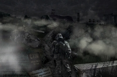

Вы отправляетесь в Чернобыльскую Зону отчуждения, взяв с собой две тысячи рублей, чуть-чуть еды, и, надев старый, сшитый еще бабушкой, свитер.
Знакомый военный согласился вас подкинуть до военного блокпоста на границе Зоны.
Сказал, чтоб вы нашли капитана А.С Кузнецова, он вас переправит через периметр.
Довезя вас до блокпоста, он вас высадил, и ваше приключение, полное неожиданностей, дружбы и предательства, где жизнь и смерть тесно соприкасаются и люди становятся другими, начинается!
Подойти к блок посту